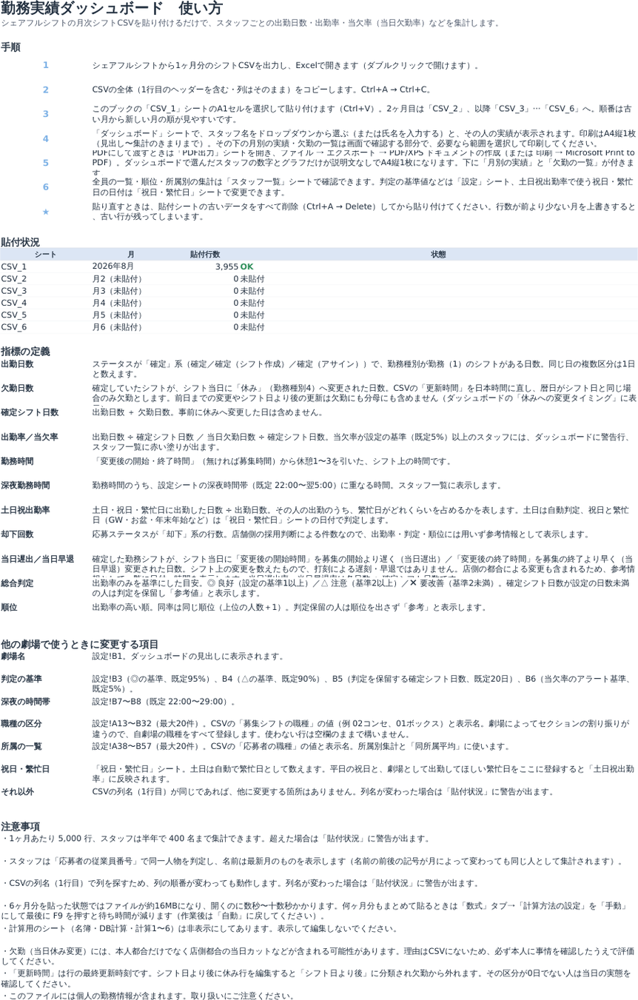
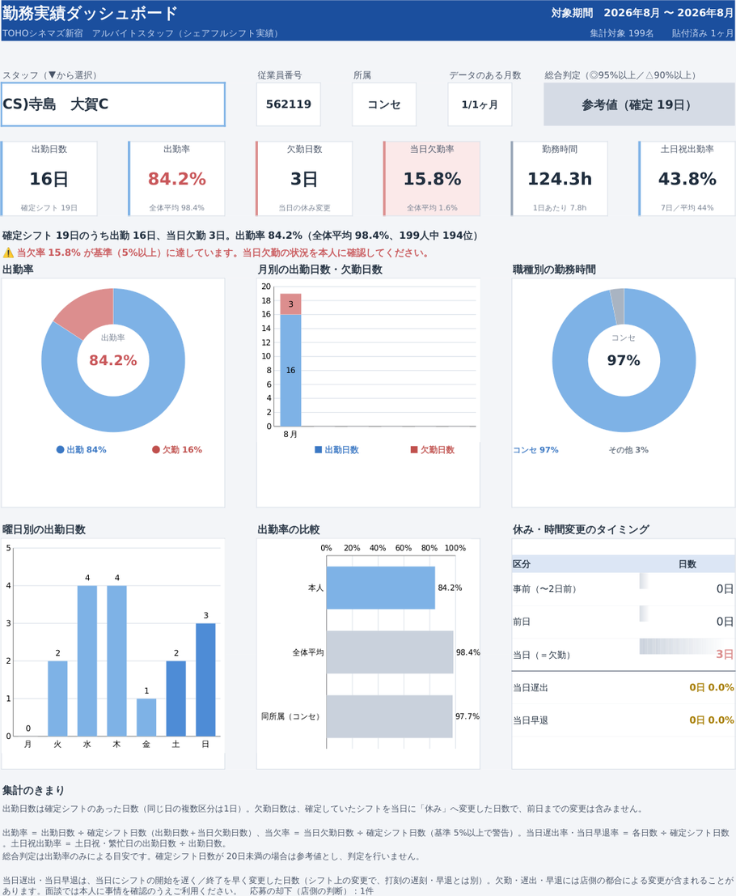

目的 ― 契約更新の面談で、勤務実績を客観的なデータで示す
シェアフルシフトのシフトCSVを月1回貼るだけで、スタッフごとの出勤日数・出勤率・当欠率（当日に休みへ変更した割合）・勤務時間を半年分まとめて表示します。「あなたの実績はこうだから、この評価です」を数字と図で説明し、本人の納得感につなげるためのツールです。
毎月の流れ（3ステップ）
STEP1 CSVを出力して貼る
シェアフルシフトから前月1ヶ月分（月初〜月末）のシフトCSVを出力。Excelで開き、全選択コピー→その月の「CSV_○」シートのA1セルへ貼付（ヘッダー行ごと）。1ヶ月目はCSV_1、2ヶ月目はCSV_2…と古い月から順に。
STEP2 貼付状況を確認する
「使い方」シートの貼付状況に「2026年8月／OK」と出ればOK。「※」が出たらセットアップガイド2ページ目の表で対処。貼り直すときはシートを全選択→Deleteしてから。
STEP3 スタッフを選ぶ → 印刷・PDF
「ダッシュボード」でスタッフ名を選ぶ（▼から選ぶか氏名を入力）。数字とグラフがその場で切り替わるので、A4縦1枚で印刷して面談へ。PDFは「PDF出力」シートを開いて ファイル → エクスポート → PDF/XPS。全員の一覧・順位は「スタッフ一覧」で。
| A | B | C | D | … | |
|---|---|---|---|---|---|
| 1 | 募集シフトの日付 | 募集店舗 | 応募ステータス | 募集シフトの開始時間 | … |
| 2 | 2026/08/01 | TC新宿 | 確定（シフト作成） | 7:00 | … |
| 3 | 2026/08/01 | TC新宿 | 確定 | 20:00 | … |
【写真1】CSV_1〜CSV_6 ― ヘッダー行ごと、A1セルへ貼り付け

【写真2】使い方 ― 貼付状況で「OK」を確認

【写真3】スタッフ一覧 ― 全員の集計・順位・所属別・ワースト10
画面の見方 ― 上でスタッフを選ぶ → 下の数字とグラフを見る
出勤率 ＝ 出勤日数 ÷ 確定シフト日数（出勤＋当日欠勤） ／ 当欠率 ＝ 当日に「休み」へ変更した日数 ÷ 確定シフト日数（前日までは含まない）
総合判定 ＝ 出勤率のみの目安（◎95%以上／△90%以上／✕90%未満。20日未満は参考値） ／ 当欠率が基準（既定5%）以上なら赤い警告行
総合判定 ＝ 出勤率のみの目安（◎95%以上／△90%以上／✕90%未満。20日未満は参考値） ／ 当欠率が基準（既定5%）以上なら赤い警告行

【写真4】ダッシュボード ― A4縦1枚。そのまま面談へ
1スタッフ選択 ▼から選ぶか氏名を入力。右に従業員番号・所属・データのある月数
2総合判定 ◎良好／△注意／✕要改善。確定シフト日数が少ない人は「参考値」で判定を出しません
36つの数字 出勤日数・出勤率・当日欠勤・当欠率・勤務時間・土日祝出勤率（土日祝・繁忙日の出勤が全体に占める割合）。当欠率が基準以上なら赤く強調され、警告行が出ます
4一文サマリー 面談で読み上げる文。全体平均と順位入り
5休み・時間変更のタイミング 休みへの変更は事前／前日／当日（欠勤は「当日」だけ）。下に、当日に入りを遅くした「当日遅出」・上がりを早くした「当日早退」の日数と率（シフト上の変更。打刻ではありません）
6画面の下（印刷範囲外）／PDF出力シート 月別の実績と、欠勤・当日遅出・当日早退の日付・変更時刻・元の時間→変更後の一覧。「PDF出力」シートは同じ内容に月別の実績と一覧を付けた面談用の1枚
数が合わないと感じたら
- 貼付状況に「※」が無いか確認（前月の行が残っていると月がずれます）
- 欠勤の一覧で日付と変更時刻を見て、店側都合の当日変更が混ざっていないか確認
- 同じ人が2人に見える → 従業員番号が違います。CSV側の登録を確認
- 「参考値」は出勤率が低いという意味ではなく、日数が少ないだけです
必ず守ること
- 出る数字はシフト上の記録から数えたもの。欠勤の理由は分からないので、面談では本人に事情を確認したうえで使う
- 黄色セル（設定）と CSV_1〜6 以外は編集しない。非表示シートは表示しない
- 貼り替えは全選択→Delete してから。並べ替え禁止・1ヶ月6,000行まで
- 個人の勤務情報です。印刷物の取り扱いに注意